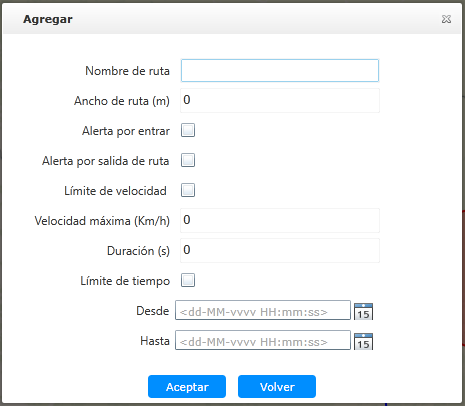

Agregar ruta de conducción
Agregue una nueva ruta de conducción: configure el tipo de alarma de ruta entrante y saliente, la regla de control de velocidad
y el período de tiempo de control de la regla.
|
1. |
Encima de la lista de información sobre la ruta principal de la ruta, haga clic 〖 〗 para abrir la ventana “Agregar”, como se muestra a continuación. 〗 para abrir la ventana “Agregar”, como se muestra a continuación.

Fig 63 Agregar ruta de conducción |
|
2. |
Ingrese a la valla electrónica de “Nombre de ruta” y “Ancho de ruta”. |
|
3. |
Seleccione el tipo de alarma de valla y marque “Alerta por entrar” o “Alerta por salida de ruta”.
|
• |
“Alerta por entrar”: se informe una alerta cuando el vehículo ingrese a la ruta de conducción; |
|
• |
“Alerta por salida de ruta”: se informa una alarma cuando el vehículo está fuera de la ruta. |
|
|
4. |
(Opcional) configure el límite de velocidad del vehículo. Para más detalles de las operaciones, véase Agregar valla electrónica.. |
|
5. |
(Opcional) configure el período de tiempo de control de conducción del vehículo. Para más detalles de las operaciones, véase
Agregar valla electrónica.. |
|
6. |
Haga clic en 〖Aceptar〗 para completar la adición de información de ruta de conducción, y el sistema aparecerá un aviso. |
|
7. |
Haga clic en 〖Aceptar〗 y use el mouse para dibujar la ruta de conducción en el área del mapa SIG. Una vez completado el dibujo, use el botón izquierdo
del mouse para hacer doble clic para finalizar el dibujo de la ruta de conducción, y el sistema muestra un cuadro de diálogo
emergente para agregar información de ruta.
Al dibujar una ruta de conducción, el número de nodos no puede exceder los 34.
|
|
8. |
Haz clic en 〖Aceptar〗. Se agrega un nuevo registro de la ruta de conducción a la lista de vallas electrónicas.
|